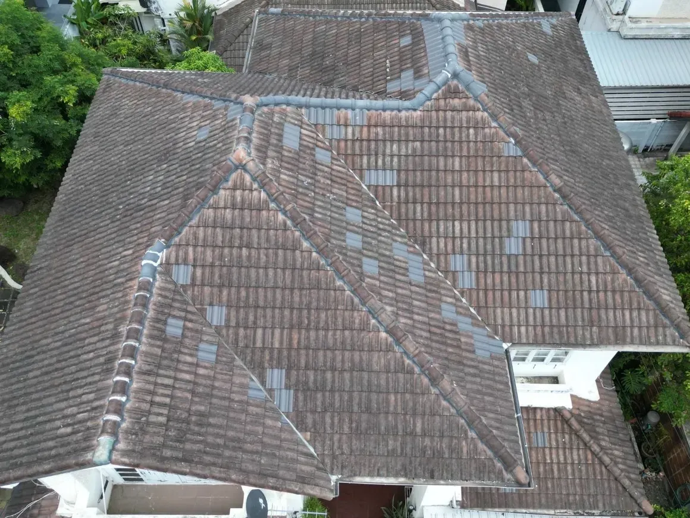
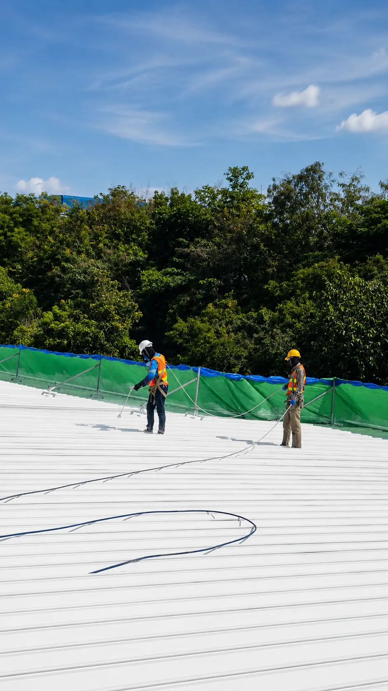

บริการงานหลังคาโดยช่างเด่น
รับทาสีหลังคาบ้าน
ดูแลตั้งแต่ตรวจสภาพ ทำความสะอาด เตรียมพื้นผิว ไปจนถึงทาสีหรือพ่นสีหลังคา โดยผู้มีประสบการณ์มากกว่า 5 ปี ให้บริการกรุงเทพฯ และปริมณฑล
ประสบการณ์มากกว่า 5 ปี
ตรวจสภาพก่อนเริ่มงาน
เลือกระบบสีให้เหมาะกับพื้นผิว
ประเมินหน้างานฟรี
ผลงานจริง
เปลี่ยนหลังคาเก่าให้กลับมาดูสะอาดและโดดเด่น
ภาพตัวอย่างก่อนและหลังทำจากหน้างานจริง ช่วยให้เห็นความแตกต่างของการเตรียมพื้นผิวและการพ่นสีอย่างเป็นระบบ


ขั้นตอนการทำงาน
เตรียมพื้นผิวให้พร้อมก่อนลงสี
- 1
สำรวจชนิดและสภาพหลังคา
ตรวจรอยแตกร้าว คราบสะสม สีเดิม และจุดที่ควรซ่อมก่อนเริ่มงาน
- 2
ทำความสะอาดพื้นผิว
ชำระล้างสิ่งสกปรกและคราบที่อาจลดการยึดเกาะของสี
- 3
ซ่อมและเตรียมจุดเสี่ยง
แก้ไขจุดที่พบจากการตรวจหน้างานตามความเหมาะสมของวัสดุ
- 4
ทาหรือพ่นระบบสี
เลือกวัสดุและวิธีลงสีให้เหมาะกับหลังคาและสภาพหน้างาน
- 5
ตรวจความเรียบร้อย
ตรวจพื้นที่ทำงานและเก็บรายละเอียดก่อนส่งมอบ
งานที่ให้บริการ
ดูแลหลังคาบ้านตามสภาพพื้นผิวจริง
หลังคาแต่ละชนิดและแต่ละหน้างานต้องใช้วิธีเตรียมพื้นผิวต่างกัน จึงควรตรวจสภาพก่อนเลือกระบบสี
หลังคากระเบื้อง
ตรวจสภาพกระเบื้อง สีเดิม และคราบสะสมก่อนกำหนดขั้นตอนทำความสะอาดและลงสี
หลังคาเมทัลชีท
ตรวจสนิม รอยต่อ และการยึดเกาะของสีเดิม เพื่อเลือกระบบเคลือบผิวที่เหมาะสม
จุดรั่วซึมและรอยต่อ
ตรวจจุดเสี่ยงที่พบร่วมกับงานสี และแนะนำแนวทางแก้ไขตามสภาพหน้างาน
พื้นที่ให้บริการ
รับทาสีหลังคาบ้านในกรุงเทพฯ และปริมณฑล
นัดสำรวจหน้างานเพื่อประเมินพื้นที่ ความชัน การเข้าถึง และสภาพพื้นผิวจริงก่อนสรุปงาน
คำถามที่พบบ่อย
ก่อนตัดสินใจทาสีหลังคาบ้าน
ควรทาสีหลังคาเมื่อไรexpand_more
ควรให้ช่างตรวจเมื่อสีเดิมซีด ลอก มีคราบสะสม หรือหลังคาดูเก่า เพื่อประเมินสภาพวัสดุและเลือกวิธีเตรียมพื้นผิวที่เหมาะสม
ทาสีหลังคาได้ทุกประเภทหรือไม่expand_more
หลังคาแต่ละชนิดต้องใช้วัสดุและวิธีเตรียมพื้นผิวต่างกัน ทีมงานจึงตรวจชนิดและสภาพหลังคาก่อนเสนอระบบสี
ต้องประเมินหน้างานก่อนหรือไม่expand_more
ควรประเมินหน้างานเพื่อดูพื้นที่จริง ความชัน จุดที่ต้องซ่อม และการเข้าถึงหน้างาน ก่อนสรุปขั้นตอนและราคา
นัดประเมินงานทาสีหลังคาบ้าน
ส่งรายละเอียดพื้นที่หรือรูปหลังคาให้ทีมงานช่างเด่น เพื่อพูดคุยและนัดสำรวจหน้างาน